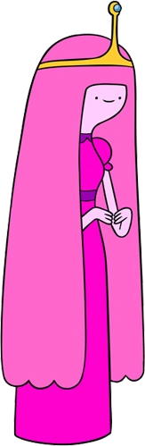
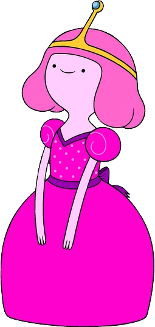
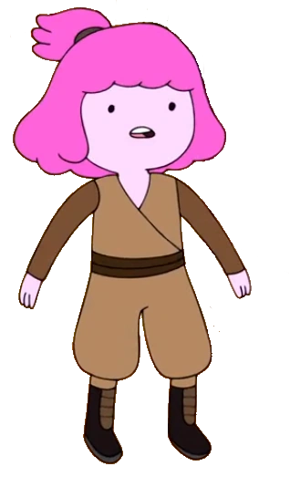

Backstory
Princess Bonnibel Bubblegum was formed as a part of a massive, blob-like hive mind made of pink gum known as the Mother Gum in the years immediately following the Mushroom War,
which spread out across the destroyed city and first appeared in "Simon & Marcy".
In the aforementioned episode, the Mother Gum served as an ally for the titular characters by providing Simon with the soup he wanted for the young Marceline. In a flashback from "Bonnie and Neddy"
taking place over 800 years before the events of the show, she and her brother Neddy drop from the ceiling of an abandoned building where the Mother Gum is now resting.
As shown in the final cutscene of the game Adventure Time: Explore the Dungeon Because I DON'T KNOW!, after she emerged from the gum, she learned to think, feel, and be independent.
Her sentient "parents" remained far beneath the Candy Kingdom, as a massive blob of bubblegum. They were eventually released into Ooo after they were defeated.

As a child, roughly 800 years before the events of the series, Bonnibel was living in the post-apocalyptic wasteland that Ooo was.
Living in a hideout next to a radioactive river (which would later become the place the Candy Kingdom was built) with only her brother,
she longed for more family members, thus creating Uncle Gumbald, along with Aunt Lolly and Cousin Chicle. She had planned for them to
fit specific archetypes to create a family dynamic and make her life less lonely, however, Gumbald soon revealed to his niece that
he had plans to build a candy city. Bonnie, disliking this plan, created Lake Butterscotch in place of the site where her uncle
wanted to build apartments. Gumbald, infuriated by this, began to devise a plan to get rid of his niece and take control over the
family. Sending Bonnibel away on a date with Mr. Cream Puff, whom Gumbald had created himself, he, along with Lolly and Chicle,
discussed the plan to overthrow Bonnibel and build their candy city. During this discussion, Gumbald showcased his new creation:
"Dum-Dum Juice," a serum to turn Bubblegum into a docile and simple-minded candy subject like Mr. Cream Puff.
Gumbald then tricked Lolly and Chicle into eating cupcakes laced with the serum, turning the two into a cheerful and simple-minded
piñata and candy ball respectively. When Bonnibel returned from her date, Gumbald attempted to transform her as well,
but this ultimately failed, as Bonnie managed to cause the serum to spill onto Gumbald's face, turning him into a punch bowl.
Bonnie decided that the trio was best left as candy people, as she claimed they seemed happier in their simple-minded and obedient
new forms and declared herself as their "princess." Since then, the majority of the princess's subjects she created were loyal to
her and simple-minded, likely to prevent any future incidents similar to the one with her created family members.
She eventually build her kingdom and created more Candy People, calling her kingdom the Candy Kingdom.

Powers and Abilities
Princess Bubblegum has a high-level of intellect, apparent in her scientific aptitude and inventing skills.
Notable examples of her intelligence are when she built her own lab, fashioned a formula to revive/reanimate dead Candy People,
and when she created the candy people, Lemongrab, Goliad, Stormo, and Lemongrab 2.
Princess Bubblegum is bilingual, speaking German and English. As she can apparently understand Lady Rainicorn, who speaks in Korean,
it is implied she knows the Korean language.
She has some proficiency in hand-to-hand combat.
She is an ambidextrous writer.
Princess Bubblegum has some caliber of longevity.
Her biological age can be fluctuated by adding or removing candy biomass.
Bubblegum's most conventional use of her powers.
After her right hand and forearm were turned into muffins by her nanobots, Bubblegum was able to stretch her stumped
arm out to how it was originally; this is most likely how she increases and decreases the length of her hair.
Princess Bubblegum was observed to glow when she was calming her brother down with a series of clicking noises.
Princess Bubblegum can project in various forms quantities of candy (e.g. jellybeans, scotch mints, and soda pop)
through her hands. She normally shoots torrents of jelly beans at high-speed from the palms of her hand, and this
seemed enough to demolish some of the structures in her kingdom. Based on her knowledge of chemistry, she was able to create an
explosion using soda pop and scotch mints, and the result was capable of destroying the huge ice construct made by Patience.
After being overrun by her elemental powers, Princess Bubblegum became connected to all candy throughout all the galaxies.
She could also transform other people and objects into candy, affecting a fellow Elemental and even further altering the already
candy-like denizens of her kingdom; Finn described this as the "candy curse." Those affected were uncharacteristically joyful and sweet in terms of personality.
Her crown and matching earrings are capable of protecting the wearer's mind from the Lich's influence. The gem of power is also used for the Enchiridion.